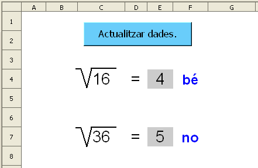
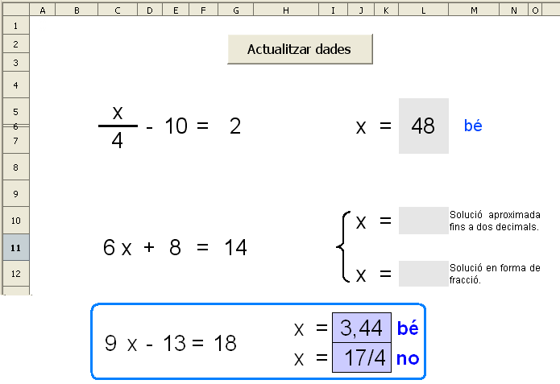
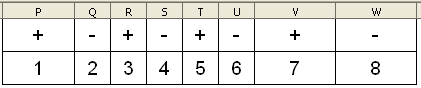

Presentació gràfica de l'activitat

Funcions que es fan servir en aquesta activitat
Objectiu de l'activitat
Calcular arrel quadrades exactes.
Desenvolupament de l'activitat
1. Obrir el fitxer M5 i canviar el nom de Full2 pel d'M5P2 arrel.
2. Fer que les cel·les del rang C4:F7 tingui un format (atributs de cel·la) semblant al gràfic de la presentació de l'activitat.
3. Escriure a la cel·la C4: =SI(A1=0;ALEATENTRE(1;9)^2)
Amb el símbol ^ s'eleva un número al quadrat .
4. Escriure a la cel·la
F4:
=SI(E4="";"";SI(ARRELQ(C4)=E4;"bé";"no"))
Fent servir la funció ARRELQ() es calcula l'arrel quadrada del valor de la cel·la C4.
El símbol de l'arrel es pot fer amb la línea poligonal composta que hi ha a la barra d'eines de dibuix.
5. Fer una macro amb les següent funcions:
Esborrar els valors les cel·les del rang E4:E7 .
Assignar a la cel·la A1 el valor de 0
Que la cel·la E4 rebi el focus.
6. Crear un botó de prémer de Controls de formulari i assignar-li la macro feta anteriorment.
7. Validar la cel·la A1 per al valor 0 .
8. Protegir les cel·les que convingui.
9. Ocultar les cel·les que convingui.
10. Comprovar que l'activitat funcioni correctament.
La segona arrel segueix el mateix procediment.
16. Desar el fitxer
M5.
Presentació gràfica de l'activitat

Funcions que es fan servir en aquesta activitat
Objectiu de l'activitat
Iniciar-se en les possibilitats del full de càlc en les equacions.
Procediment a seguir en la primera equació
1. Obrir el fitxer M5 i canviar el nom de Full3 pel d'M5P2 equacions.
2. Fer que l'amplada de les cel·les del rang B1:W1 sigui d'1 cm.
Fent que l'amplada d'aquestes cel·les sigui d'
1 cm, es facilita la visó conjunta de l'activitat. Quan s'obre un full de càlcul, l'amplada per defecte de les cel·les és de
2,27cm amb la qual cosa és possbile que no es vegin a la interfície del full les cel·les corresponents a les columnes posterirors a les lletres
L o
M, depenent de cada pantalla de l'ordinador que es fa servir. Una altra manera de facilitar la visió de columnes que no es veuen i sense deixar de veure les columnes que ens interessen, es fent el següent:
Situar-se a la cel·la K20 (cel·la activa), per exemple, i de la barra de menú anar a Finestra i fer clic en Congela
Havent-ho fet, es mostra una línia vertical i un línea horitzontal que delimiten un espai interior (rang de cel·les A1:J20) el qual sempré serà visible encara que es facin desplaçaments cap a la dreta o cap avall. D'aquesta manera es podria veure la cel·la A1 i la cel·la AZ1, per exemple.
. Escriu a les cel·les del rang
P1:W2 el següent:

En la nota que va a continuació del pas
7, s'explica el significat del rang
P1:W2
4. Escriure a la cel·la
C5:
X(la incòginita de la equació).
5. Escriure a la cel·la
C7:
=SI($A$1=0;ALEATENTRE(1;10))
6. Escriure a la cel·la
D5:
=SI(A1=0;CONSULTA(ALEATENTRE(1;8);$P$2:$W$2;$P$1:$W$1))
El rang P2:W2 serà el vector de cerca que anirà en funció d'un número aleatori el qual actuarà com a Criteri de cerca. El contingut d'una de les cel·les del rang P1:W1 serà el resultat de la cerca (result_vector) donant un valor positiu o negatiu. D'aquesta manera s'aniran canviant els signes de les cel·les E5 i E10 de les equacions cada vegada que la cel·la A1V tingui el valor 0.
Hi ha altres maneres de fer que una cel·la mostri de manera aleatòria el signe positiu o el signe negatiu.
7. Fusionar les cel·les
D5:D7
8. Copiar a la cel·la
C7 i enganxar-la a la cel·la
E5.
9. Fusionar el rang de cel·les
E5:E7
10. Escriure a la cel·la
F5:
= (signe d'igual)
11. Fusionar el rang de cel·les
F5:F7
12. Escriure a la cel·la
G5:
=SI($A$1=0;ALEATENTRE(1;10))
13. Escriure a la cel·la
J5:
X (lletra X)
14. Escriure a la cel·la
K5:
= (el signe d'igual)
15. Formatar la cel·la
L5 com es veu en el gràfic de la presentació de l'eactivitat. En aquesta cel·la l'alumne escriu la solució.
16. Escriure a la cel·la
P5:
=(VALOR(D5&E5)*-1+G5)*C7 per calcular la solució de l'exercici.
Concatenant les cel·les D5 i E5 s'obté en forma de text un número amb el corresponent signe. A aquest text cal aplicar-li la funció VALOR per convertir-lo amb un valor númèric fent així possible els calculs. Aquest valor numèric es multiplica per -1 la qual cosa permet la possibilitat de canviar el signe. La resta de la fórmula seguix el mecanisme normal d'una equació.
17. Escriure a la cel·la
M5:
=SI(L5="";"";SI(L5=P5;"bé";"no")) per fer l'avaluació.
18. Fer que el format de les cel·les que tinguin contingut siguin d'un format (atributs de les cel·les) semblant al de la presentació gràfica de l'activitat.
19. Fer una macro amb les següent les funció d'actualitzar les dades i esborrar les cel·les que convingui.
20. Crear un botó de prémer de Controls de formulari i assignar-li la macro feta anteriorment.
21. Protegir les cel·les que convingui.
22. Ocultar les cel·les que convingui.
23. Validar la cel·la
A1 per al valor
0.
24. Comprovar que l'activitat funcioni correctament.
25. Desar el fitxer
M5.
Aquesta pràctica és una petita mostra de les possibilitats del full de càlcul. Evidentement amb el full de càlcul també es poden fer exercicis del tipus:
Trobar les solucions d'un sistema d'equacions
Comprovar si una equació de 2n grau té solució o no mitjançant el discriminant
Fer representacions gràfiques de l'equació de la recta, d'un sistema d'equacions i de funcions de segon grau
Treballar de manera gràfica i numèrica
Veure numèrica i gràficament els punts de talls d'un sistema d'equacions.
Observar els canvis gràfics en funció dels valors a, b i c en funcions del tipus: f(x)=ax2+bx+c
Calcular l'abcissa del vértex
Treballar els parelles ordenats en un sistema de coordenades
Treballar la regla de Ruffini
…
Aquests exercicis i d'altres podrien servir com a propostes de projecte de final de curs.